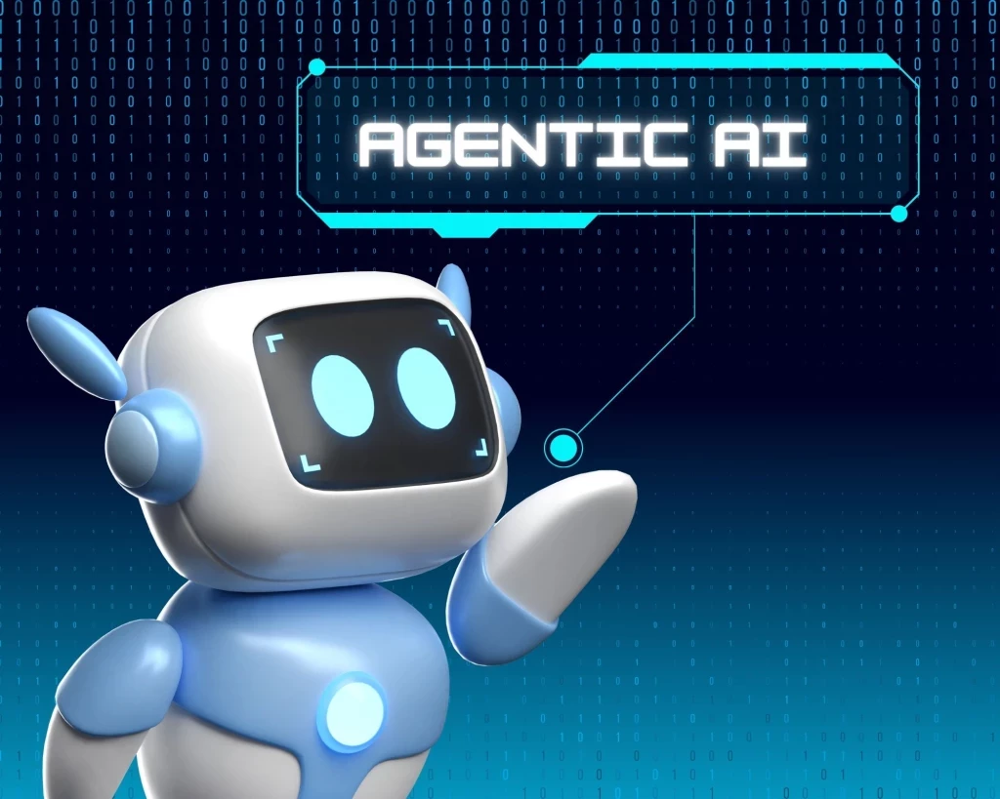
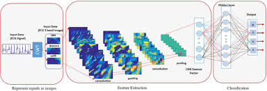
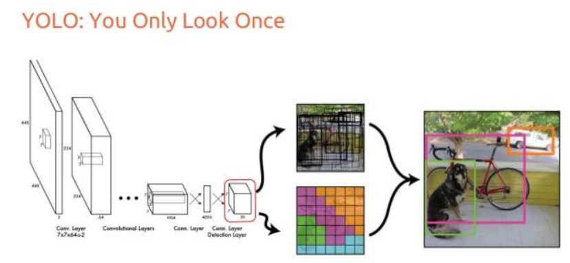
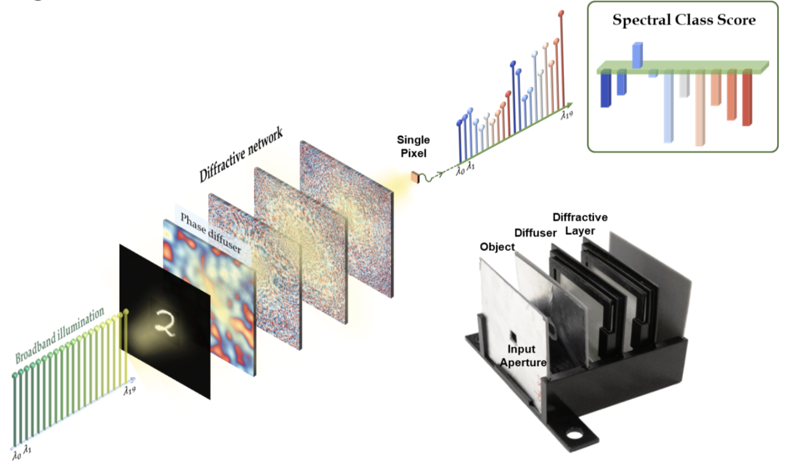
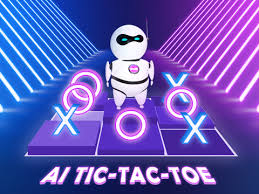
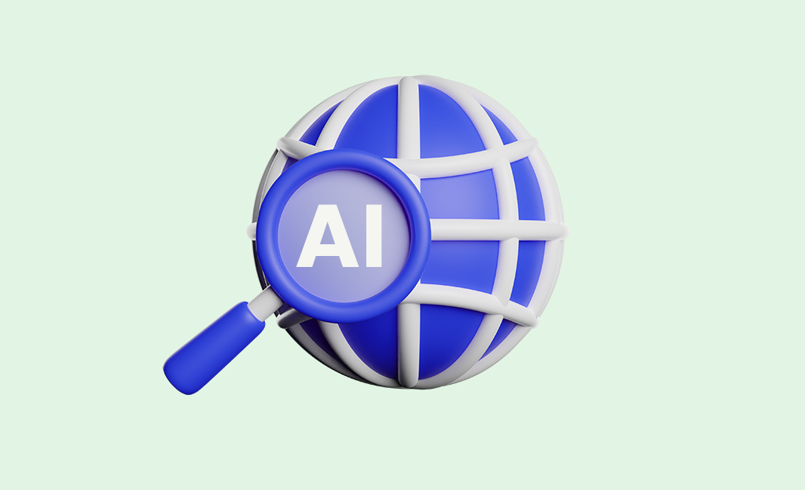
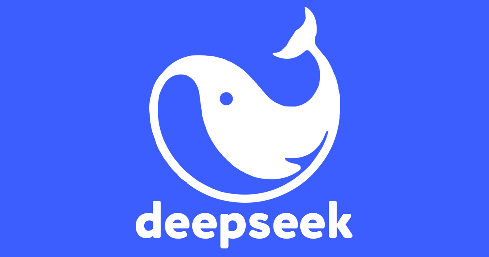

AI Projects by Htet
Welcome to my AI project portfolio. Here you can explore my work across machine learning, deep learning, computer vision, NLP, web-based AI tools, and research systems.
Agentic Q&A Web Crawler
Developed a production-oriented agentic application that analyzes imported URLs and produces high-quality training pairs. The system was built using FastAPI, Next.js, HTML, and CSS, with Docker enabling consistent containerized deployment. Hosted on AWS, the platform incorporates load balancing, secure domain and traffic management, and HTTPS enforcement to support reliable and secure cloud delivery. PostgreSQL and Redis were implemented for RAG data storage and caching, helping improve performance and scalability. This project highlights expertise in building agentic systems from prototype through to full-stack development, containerization, and secure SaaS deployment in production.
How to use it: 1. Enter a URL 2. Click Evaluate 3. Click Generate 4. Download the generated Q&A pairs. Processing time depends on the size and complexity of the content.

Customer Support Q&A Chatbot
A LLaMA 2 model fine-tuned on a custom customer support Q&A dataset for chatbot applications in business and e-commerce environments.
AI for Lung X-ray Analysis
A CNN-based medical imaging project that detects COVID-19, pneumonia, tuberculosis, and normal conditions from lung X-ray images.

ECG Signal Classification with AI
An ECG classification project using LSTM models trained on the PTB-XL dataset. The model performance varies across classes, with F1 scores ranging from approximately 60% to 90%.

YOLO Object Detection Transfer Learning
A transfer learning project using YOLO for real-time object detection tasks. It can be adapted for use cases such as robotics, automation, and defense-related detection systems.

Handwritten Digit Classifier
A handwritten digit recognition project based on the MNIST dataset using edge detection and convolutional neural networks.

Tic Tac Toe Game AI
A game AI project exploring CNN, LSTM, and hybrid models for strategy learning in Tic Tac Toe. This project compares model behavior and performance across multiple architectures.

Rock Paper Scissors with LSTM
A fun AI game project that uses LSTM-based move prediction for Rock Paper Scissors gameplay.
Smart AI Web + Research Assistant
This research assistant combines multiple tools to provide accurate, context-aware responses in a RAG-style workflow.
- Wikipedia for general knowledge queries
- Semantic Scholar API for academic and research questions
- DuckDuckGo for real-time web search
- Embedding Memory with FAISS and Sentence Transformers
- LLaMA 3.1 via Hugging Face for response generation

DeepSeek AI Agents and Automation Projects
A collection of 25 AI agent and automation project ideas built around Python, automation workflows, and LLM-based tooling.
- Project 1: Text Summarizer AI
- Project 2: Text Generator AI
- Project 3: Grammar and Spelling Checker AI
- Project 4: Named Entity Recognition AI
- Project 5: Sentiment Analysis AI
- Project 6: Customer Support AI
- Project 7: Personal AI Assistant
- Project 8: Legal AI Assistant
- Project 9: Medical Symptom Checker AI
- Project 10: Product Recommendation AI
- Project 11: Auto Email Responder
- Project 12: Resume Generator AI
- Project 13: Meeting Minutes Generator AI
- Project 14: Auto PDF Extractor
- Project 15: Content Writer AI
- Project 16: Code Compiler AI
- Project 17: SQL Query Generator
- Project 18: Code Debugger AI
- Project 19: AI-based Document Generator
- Project 20: AI-powered API Tester
- Project 21: Customer Feedback Analyzer AI
- Project 22: Real-Time News Summarizer AI
- Project 23: Financial Analyzer AI
- Project 24: AI-based Job Application Screener
- Project 25: AI Research Paper Summarizer
